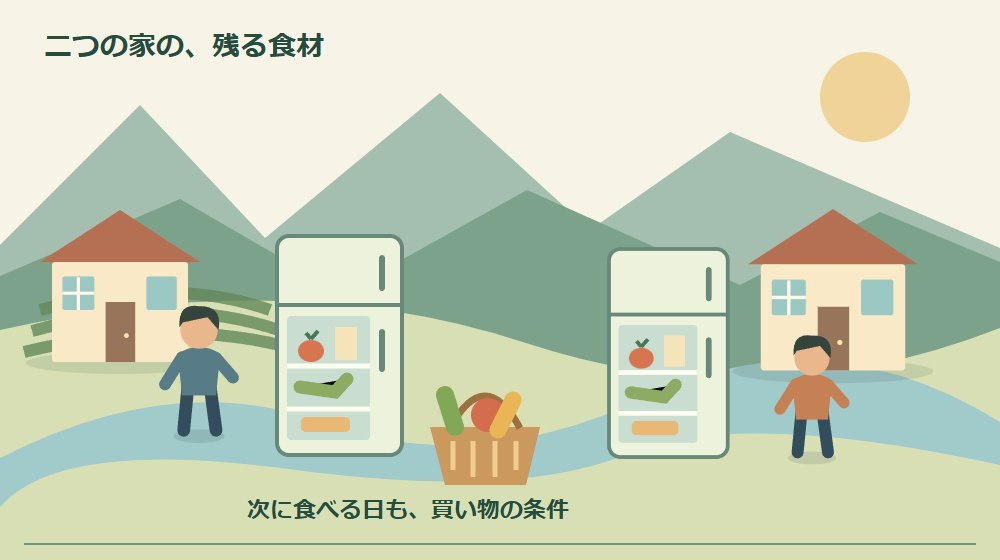
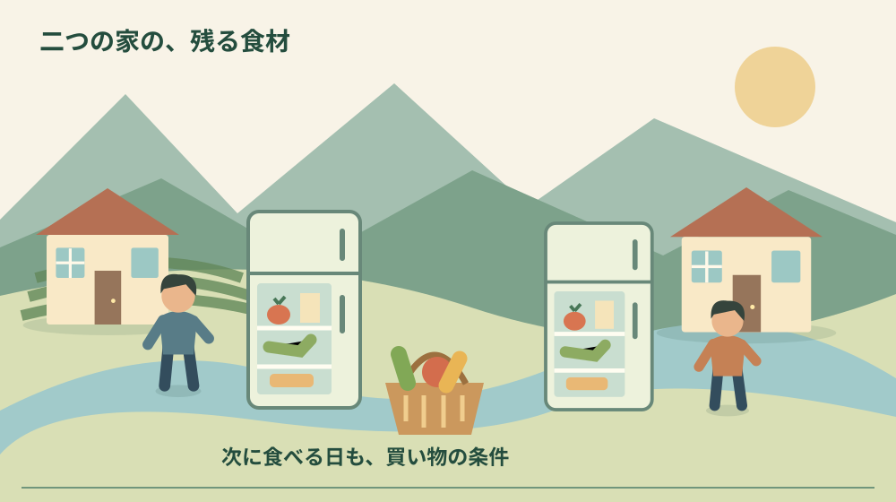
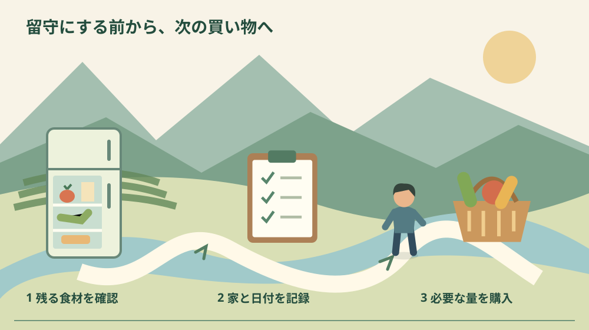

森町の食品ロス対策｜二拠点の買い置きを見直す

Q. 森町の滞在先を空けるたび、冷蔵庫の食材が余る。どう見直す？
二拠点の買い置きは、食材の残量と次に食べる日を一緒に記録するところから見直します。2026年10月は食品ロス削減月間です。買う前の在庫確認と必要量の購入という国の案内を、滞在予定へ当てはめる筆者の提案です。森町の2021年調査は二拠点世帯の実態を示していません。今日は帰る日に残りそうな食材を一つ記録してください。
食べ物を買う人と、留守の家を片付ける人
森町の実家や滞在先を行き来すると、食材を買う人と、最後に冷蔵庫を片付ける人が同じとは限りません。調理を担う家族は、残量を見て献立を変え、ごみを出す日も考えています。食品ロスを減らす話を、料理する人の頑張りだけにすると、その見えにくい負担を増やしてしまいます。
大石浩之（磐田市／不動産業）です。私は、二拠点の買い置きを考えるなら、節約の献立より先に、家を空ける日を買い物の条件へ入れたいと考えます。滞在中に食べるつもりで買った物でも、予定が変われば残ります。食材の管理は、家の利用予定と切り離せません。
2026年10月は食品ロス削減月間です。消費者庁・農林水産省・環境省が9月29日付で公表した資料を、10月4日に確認しました。国の案内にある在庫確認や必要量の購入を、森町と別の家を行き来する暮らしへ当てはめて考えます。
ここで提案する「食材と次の滞在日を一緒に記録する方法」は、筆者の提案です。国や町が二拠点世帯に対して検証した方法ではありません。森町の二地域居住を考える記事と同じく、暮らしを小さく試し、自分たちが続けられる形を見つける話として読んでください。
事実整理｜10月の呼びかけと、2021年の町調査
3省庁の2026年9月29日付発表は、10月を食品ロス削減月間、10月30日を食品ロス削減の日としています。買い物前に自宅の食材を確かめること、必要な分だけ買うこと、期限表示を理解すること、冷凍を活用することなどが、啓発の内容として挙げられています。
森町にも家庭の食品廃棄物を調べた資料があります。町公式「森町食品ロス実態調査について」は、2021年11月に町と環境省が共同で調査したと説明しています。ページの更新日は2021年12月23日です。2026年の月間開始に合わせて実施した新しい調査ではありません。
町の掲載報告書では、調査試料は126袋、合計486.98キログラムです。そのうち食品廃棄物は153.56キログラムと記録されています。この数字は調査した試料の内訳です。森町全体の年間排出量でも、二拠点で暮らす家族だけを調べた結果でもありません。
報告書は、食品廃棄物の中を調理くず、直接廃棄、食べ残しに分けています。食品ロスとして扱うのは、調理くずを除いた直接廃棄と食べ残しです。153.56キログラムを全て食べられたのに捨てた量と読むと、調査の分類を取り違えます。食品廃棄物と食品ロスは同じ数字ではありません。
意外に感じるのは、ごみ袋の重さだけを減らそうとしても、何を買い過ぎたかは分からない点です。皮や殻のような調理くずと、手を付けずに残った食品では見直す行動が違います。町の分類を参考に、家庭でも買う量の問題なのか、調理する量の問題なのかを分けて考えられます。
私は、古い調査の数字を家族の反省材料にするより、分類の考え方を借りる方が役立つと考えます。2026年の自分の家で何が起きているかは、冷蔵庫を見なければ分かりません。二拠点世帯の方が食品ロスが大きいという比較も、この町の資料からは言えません。

二つの家には、在庫と予定のずれがある
二拠点の在庫管理で筆者が想定するのは、片方の家に何が残っているか分からないまま買ってしまう場面です。これは私の実体験の紹介ではなく、管理方法を考えるための仮定です。同じ調味料が両方にあっても、使う予定があれば無駄とは限りません。数だけで責めず、使う機会との関係を見ます。
滞在日数が同じでも、家で食べる回数は違います。2泊する予定でも、到着日の夕食は外で済ませ、翌日は昼も不在かもしれません。私は、何日いるかより、家で何食作るかを先に数える方法を勧めます。家族全員が同じ時間に食べるかも、買う量を決める条件になります。
たとえば2人で2回夕食を作るなら、夕食は合計4人分という計算です。この数字は説明用の仮定で、適切な食材重量を示すものではありません。食欲、献立、年齢で必要量は違います。それでも、2泊だから普段の1週間分を買うという判断を止めるための目安にはなります。
次の訪問が決まっていない家では、使う予定も未定です。安いからと追加する前に、いつ開けて誰が食べるかを考えます。長く置けそうという印象と、表示された保存条件は別です。私は、次の使い道が書けない物は、その場で買う判断を保留する方がよいと考えます。
家族が別々に買い物をするなら、残量を知る人と支払う人の間に情報のずれが出ます。帰る人が残り物を片付け、次に来る人がまた同じ物を買う形にならないよう、写真か短いメモを共有します。全部を記録する必要はありません。毎回余りやすい一品を選ぶだけでも試せます。
買い物の前に、残量と食べる回数を合わせる
国の月間資料が勧める買い物前の在庫確認は、二つの家がある場合も使える考え方です。ただし、確認する家を取り違えないようにします。スマートフォンの写真に森町の家と自宅の区別を付け、撮影日も残します。古い写真を現時点の在庫と読み違えないためです。
私の提案では、買い物メモを作る前に、今回の滞在で使う食材を一つ選びます。冷蔵庫に半分残った野菜を使うなら、それに必要な物だけを書きます。特売を見てから献立を全部増やすより、残っている物に合わせて不足分を買う方が、予定とのずれを小さくできます。
容量の大きい商品は、単位当たりの価格だけで決めません。使い切れず残るなら、支払った総額と食べた量がずれます。小さい商品を選ぶことで、帰る前の調理や運搬が減る場合もあります。私は、安さを一袋の価格だけでなく、使う回数と片付ける手間まで含めて見たいと考えます。
予備の食材を全てなくせばよいとも考えません。急な予定変更や買い物へ行けない日に備える物は、家族にとって役割があります。備蓄として持つ物と、今回の食事で使う物を分け、表示と保管状態を確認しながら入れ替えます。食品ロス対策のために、必要な備えを無理に削る話ではありません。
買う人が複数いるときは、「野菜がある」だけでなく、何がどのくらいあるかを伝えます。袋が未開封なのか、使いかけなのかでも次の買い物が変わります。完璧な数量管理を求めるより、買い足す判断に必要な一行へ絞る。記録する人の負担を増やさないことも方法の一部です。
帰る前は、食べる・保存する・残さないを考える
留守にする前の確認では、次に使う予定と、食品の表示・保存状態を合わせて見ます。国は冷凍の活用を紹介していますが、何でも冷凍すれば安全に無期限で置けるという意味ではありません。商品ごとの説明に従い、状態が分からない物を保存期間だけ延ばそうとしないでください。
冷凍を使う場合も、何をいつ入れたかが分かる形にします。私は、小分けした容器に内容と日付を書き、次に使う予定を記録する方がよいと考えます。冷凍庫へ移しただけで使う日が決まらなければ、見えない場所に在庫を移すだけになる可能性があります。
留守宅の冷蔵庫や冷凍庫を使い続けるなら、電源を維持するかという家の管理とも関わります。長期不在だから電気を止める判断と、食品を置いておく判断を別々にしないことです。私は、食材のためだけに電気契約をどうすべきか断定せず、家全体の利用と保管条件を合わせて検討します。
別の家へ持ち帰る方法も、移動時間と温度管理を伴います。持ち帰れば必ず食品ロスを減らせるとは限りません。保存条件に合う運搬ができるか分からない物は、無理に移動させないでください。食べられるか迷う食品を、もったいないという理由だけで食べる必要はありません。
帰る直前に大量に調理して持ち帰る方法が、その家族に合うとは限りません。調理、冷ます時間、容器、運搬、洗い物が増えるからです。私は、調理担当の最後の頑張りへ頼る前に、最初に買う量を見直す方を優先します。帰る日の忙しさも、買い物の段階で想像しておきたい条件です。
良い点｜国の呼びかけを、小さな行動へ変えられる
食品ロス削減月間の案内で私が良いと感じるのは、買い物前の在庫確認という入口が具体的なことです。高価な道具を買ったり、生活全体を変えたりする前に始められます。森町の滞在先で残る食材を一つ見るだけなら、予定が不規則な家族でも試す範囲を決められます。
必要量の購入という考え方も、滞在日数より食事の回数で考える助けになります。私は、使う予定が見える買い物なら、帰る前の調理や片付けを一人へ集中させにくくなると期待します。ただし、この方法で何割減るという効果は確認していません。自分たちの記録で確かめる提案です。
森町の調査が食品廃棄物を分類していることも、家庭の振返りに役立ちます。私は、残った食品を一括して料理の失敗にしない見方を評価します。買い過ぎ、作り過ぎ、予定変更では、次に変える行動が違います。原因を一つに決めつけなければ、家族の誰かを責める話にしなくて済みます。
家計を考えるときも、食材だけを独立させずに見られます。森町の二拠点生活費を考える記事では、複数の家を持つ支出の見方を扱いました。食材の二重購入や持ち運びの手間も、自分たちの暮らしを試す記録として残せます。
注文したい点｜調理担当へ、記録まで丸投げしない
食品ロス対策で私が注文したいのは、記録と管理の仕事が、いつも料理をする人へ追加される形です。冷蔵庫を調べ、写真を撮り、献立を変え、家族へ知らせる仕事まで一人に積めば続きにくい。今日は買う人が残量を一つ確認するところから始め、担当の負担を分けたいと考えます。
町の2021年調査は、2026年の二拠点世帯の食べ残し方を示す資料ではありません。私は、地元の数字があるからと、そのまま今回の家族の原因へ結び付ける説明にはしたくありません。家を空けることが原因なのか、量が多すぎたのかは、自分の家の記録で確かめる必要があります。
食品を減らす目標が厳しすぎると、食べ切ること自体が負担になります。予定が変わった日まで失敗として責めない方がよいと私は考えます。次に買う量を一つ減らす、共有する時刻を変えるなど、仕組みを直す話にします。安全に食べられるかの判断を節約額で押し切らないことです。

対案・結論｜今日は残る食材を一つ記録する
二拠点の食品ロス対策を始める今日の一歩は、次に帰る日に残りそうな食材を一つ選ぶことです。名前、置いてある家、残量、確認日、次に使う予定を書きます。全ての食品を登録する表を最初から作る必要はありません。一品だけなら、記録の手間がどのくらいかも確かめられます。
たとえば「森町の家、使いかけの野菜、残り半分、10月4日確認、今夜使う予定」という形です。これは記入例で、実際の在庫や食事の記録ではありません。次の滞在で使うなら日付を書き、未定なら未定と残します。使う日がないと分かった時点で、次の購入を見直す材料になります。
買い物をする家族は、その一行を見て買い足すか決めます。使い切った人は、使い切ったことだけを追記します。私は、同じ写真を何度も送り直すより、変わった箇所が分かる方法が合うと考えます。紙でもスマートフォンでも構いません。家族が普段見られる場所を選びます。
1回試したら、残らなかったかどうかだけでなく、記録が負担だったかも振り返ります。買い物の直前では在庫を確認できないなら、帰る前に写真を撮る方法へ変えます。続かない管理表を増やすより、買う人が判断できる短い情報へ直す。暮らしの試行として扱うのが私の提案です。
家族に残す記録｜ごみの日と家の予定もつなぐ
食品の記録とは別に、家を出る日、次に来る予定、ごみを出せる日を控えます。留守にする前に袋へまとめても、収集日に出す人がいなければ片付けは終わりません。親族や近隣が代わりに出してくれると決めつけず、家族が実際に動ける日程で考えてください。
分別と出し方は、森町のごみ分別改訂を整理した記事から公式案内へ確認できます。この記事では食品ロスを減らす買い物の話と、出たごみを正しく処理する話を分けています。減量の工夫をしたから分別や収集日の確認が不要になるわけではありません。
留守宅の管理記録には、冷蔵庫の利用、電源の扱い、残している物の確認日も添えられます。家を使う家族が替わったときに、誰かが片付けたと思い込む空白を減らすためです。食材の詳細を全員へ見せる必要はありませんが、片付けを引き受けた人と完了した日が分かる形は役立ちます。
大石の視点｜使い切る努力より、留守の日を先に数える
私は、食材を使い切る工夫より先に、留守にする日を買い物へ入れたいと考えます。料理する人が最後に帳尻を合わせる暮らし方では、その人の時間を使い続けることになります。森町と別の家を行き来するなら、家の予定も食材の条件です。買う量を決める側が、その条件を引き受けたい。
正直に言えば、在庫を見えるようにすれば十分なのか、私にも迷いがあります。急な仕事や家族の用事で予定が変わることは、記録では防げないからです。それでも、残った理由が一つ分かれば次の買い方は変えられます。ゼロを約束するより、無理なく減らせる一品を選ぶ方が続くと考えます。
不動産の仕事の側からも、家は使う日だけで管理が完結するものではありません。留守の間の設備、残した物、片付ける人まで考えて初めて維持できます。食品ロスの話も同じく、買った日だけを見ない。町の暮らしを支える調理とごみ処理の負担を、家族の段取りで少し減らす発想です。
まとめ｜二つの家を、一品の記録でつなぐ
2026年10月の食品ロス削減月間をきっかけに、買い物前の在庫確認と必要量の購入を、二拠点の予定へ合わせてみます。森町の2021年調査は食品廃棄物と食品ロスを分ける参考資料です。現在の町全体や二拠点世帯の実態を示す数字としては使いません。
今日は、帰る日に残りそうな食材を一つだけ書いてください。置いてある家と次に使う予定が見えれば、買う人が判断できます。調理する人の努力へ仕事を足すのではなく、買い物と留守宅の予定をつなぐ小さな記録から、食費と片付けの負担を見直せます。
よくある質問
森町の食品廃棄物153.56kgは、2026年の食品ロス量ですか？
違います。森町と環境省が2021年11月に実施した調査の試料126袋、486.98kgのうち、食品廃棄物が153.56kgでした。食品廃棄物には調理くずも含まれ、食品ロスの量とは同一ではありません。2026年の町全体や二拠点世帯の排出量を示す数字でもないため、自分の家の削減目標へ直接置き換えないでください。
二拠点の食材は、帰る前に全部冷凍すればよいですか？
冷凍は国の啓発で紹介される工夫の一つですが、全ての食材を一律に保存できるという意味ではありません。商品表示と保存状態を確認し、冷凍に適するものだけを扱います。留守宅の冷凍庫を使うなら電源の継続と次の利用日も確認します。食べられるか迷う物を、食品ロス削減のために無理に食べる必要はありません。
最初から二つの家の在庫を全部管理する必要がありますか？
筆者の提案は、次に留守にするときに残りそうな食材を一つだけ選ぶ方法です。置いてある家、残量、確認日、次に使う予定を書き、買い物をする家族と共有します。町の調査で効果が検証された手法ではありません。記録の手間が調理担当へ集中しないよう、買う人が確認を引き受けるところから試してください。
実家や土地の資料を家族で整理する場合は、実家カルテも利用できます。売却未定でも使える本サイト運営会社の民間サービスです。森町や各団体の公式手続ではなく、利用は任意です。
公式情報源
2026年10月4日確認（2026年10月確認）。制度・数値・受付や利用条件は変わる場合があります。行動前に公式の最新案内を確認してください。個別の契約・税務・認定等の判断は担当窓口や専門家へ相談してください。